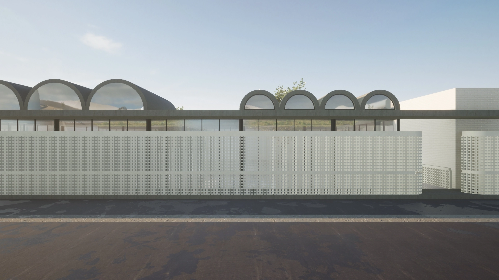
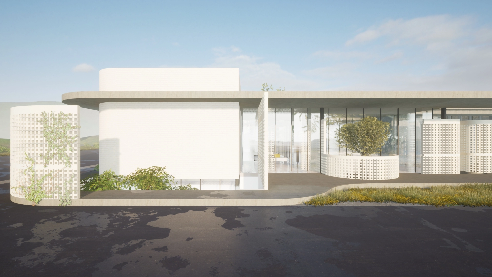
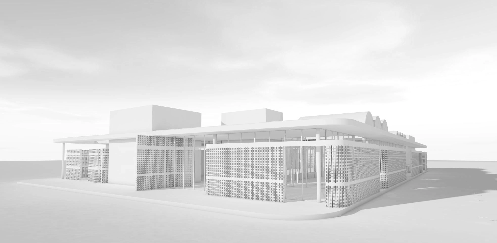
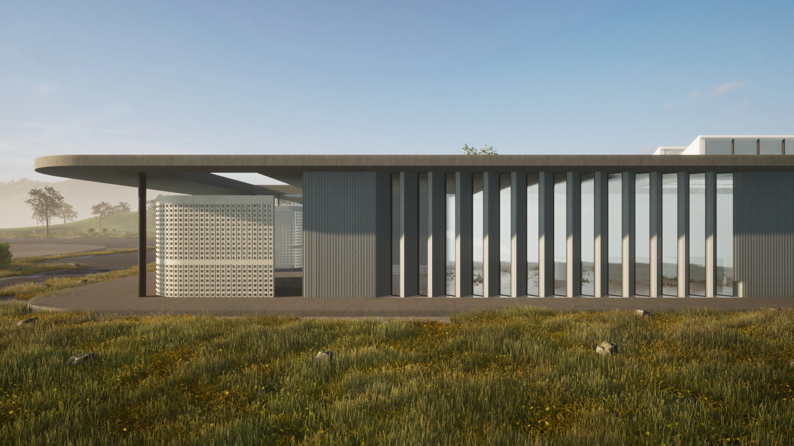
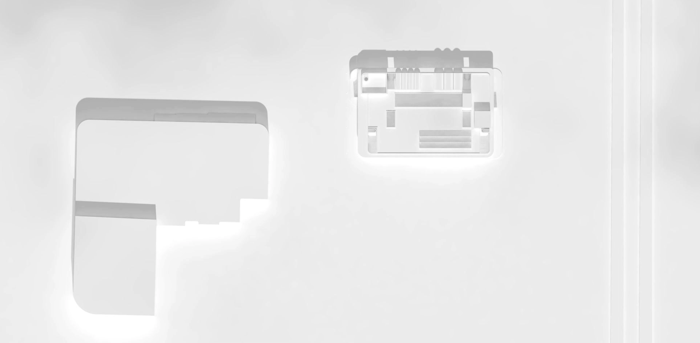

Unismack Offices has been producing high quality and delicious baked
snack since 2008, settled in the industrial region of Kilkis, on the
Northern part of Greece. The proposal suggests a new office building
right across the existing factory, including the future growth of the
factory on personnel and the expansion through the Innovation Center,
the heart of the company creativity.
The building, shaped with a mediterranean logic and palette, uses the
“patio” tool as a way to create a green, eco conscious environment for
working, learning and vibrating oneself everyday.
The brief organises on the ground level the administrative offices, the
rest of the different sectors of working fields, along with the expo
kitchen area, the supermarket area, the cafe/snack area, the meetings
rooms and the auditorium. Underground level accommodates the storages
and MEP areas.
The rooftop of the project is considered a 5th facade, as it creates a
geometrical site with arches, squares, triangles, holes and complete
gaps, corresponding on the use of the space beneath. Total built Area of
1700sqm.





